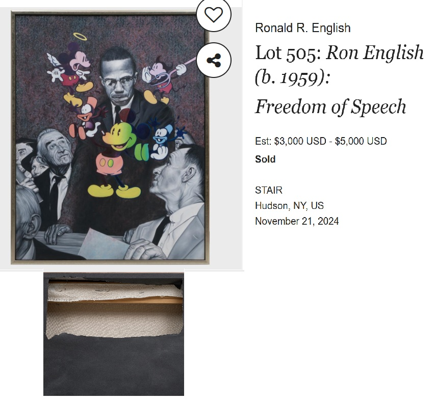
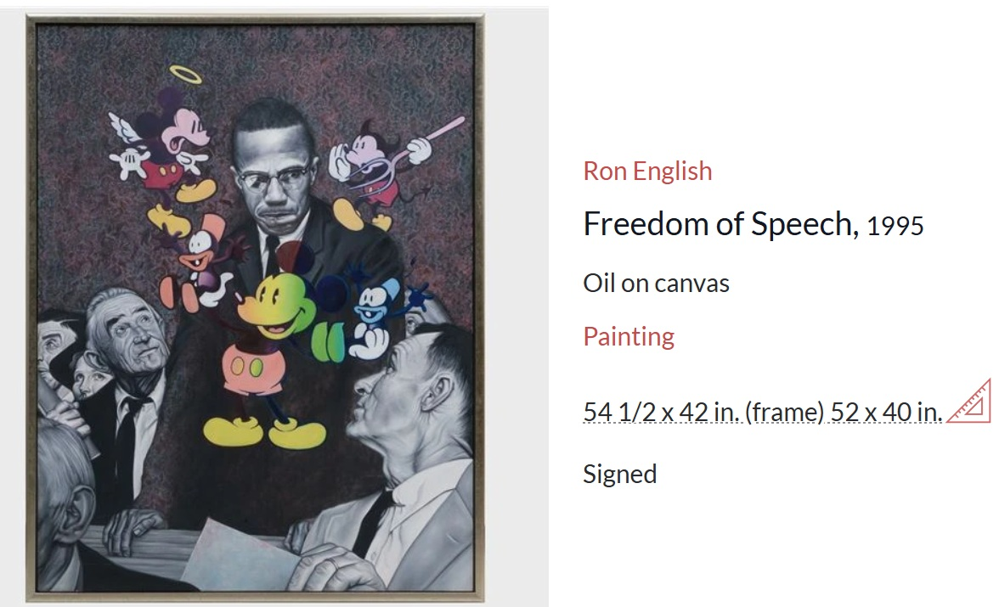
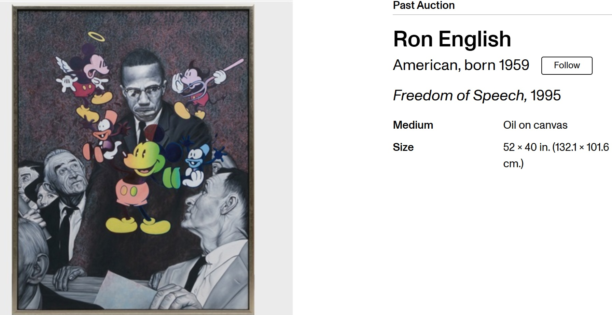

Literature
Ron English, Popaganda: The Art & Subversion of Ron English (San Francisco: Last Gasp, 2001), p. 83. ISBN 1-887128-60-3.
Notes
In Popaganda, this work was erroneously reported as 53 × 40 inches.
Auction and art-market records also present variant measurements. Invaluable reports the work as 52 × 40 inches, with frame dimensions of 54 1/2 × 42 inches, while MutualArt lists the work as 138.43 × 106.68 cm. The present catalogue record retains the 50 × 40 inch dimensions pending further confirmation.
This work references Malcolm X.
Ancillary Documentation
The following materials document the work in progress, the Malcolm X reference image, and later auction or online art-market records associated with the painting.



